As mentioned in the Navigation topic, double-clicking on a plate will open a heatmap of that plate. This is the most common type of visualization for a plate in Phaedra. In this topic, several other methods of viewing plates are explained besides the heatmap.
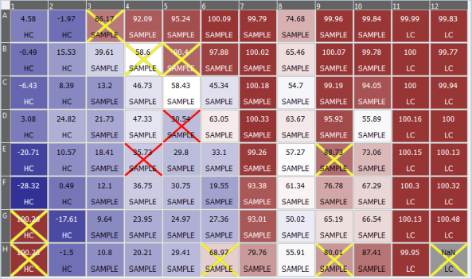
The heatmap is a powerful tool, as it can display a lot of information in one view. By default, a heatmap will show:
Heatmaps will sometimes display grey wells, with a NaN feature value, as shown in well H12 in the image above. This means that the feature value for that well is NaN (Not a Number). This may have different causes:
When opening a plate, the plate view lists two tabs at the bottom: Plate View and Table View. The Plate View contains a heatmap, as explained above. The Table View contains a table listing multiple properties and feature values for each well.
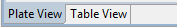
Click on the Table View tab to switch from the heatmap presentation to the table presentation.
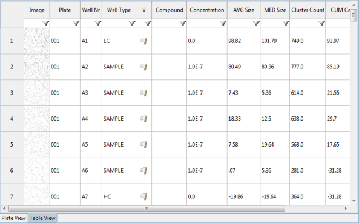
The table contains one row for each well. The first column is a thumbnail of the well image. Note that you can make the thumbnail bigger just by resizing the column width.
Besides several well properties such as well number, well type, compound and concentration, additional columns will display the different well features.
You can sort these columns by clicking on the column title, or filter rows by typing a value in the field below the column title.
Phaedra contains many types of charts, from one-dimensional histograms to three-dimensional scatter plots. Most of these charts can be opened by right-clicking on a plate or well, and selecting the desired chart type in the Charts submenu.
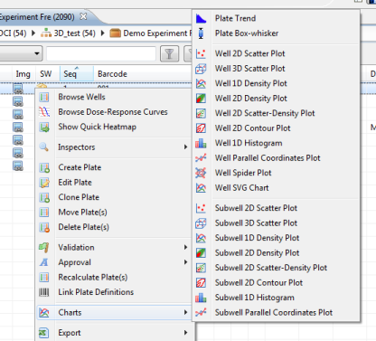
Charts have many options and settings, and this manual contains a chapter explaining how to configure a chart in great detail. However, the most important setting for any chart is the axis feature selection. For example, in a two-dimensional well scatter plot, the X and Y buttons in the top right of the view allow you to specify two well features to plot against each other.
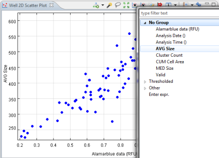
Well images can be shown at any time by right-clicking on a well (in a heatmap or in a table) and selecting Show Well Image.
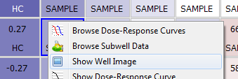
The Well Image view will open, showing the well image.
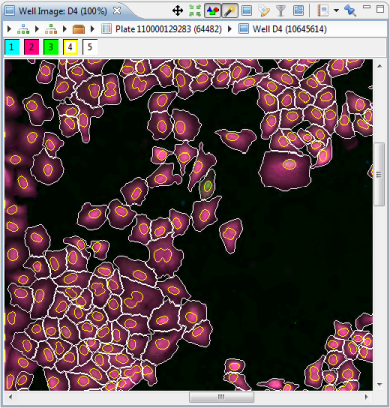
Just like the Chart views, this view has many settings, which are explained in a dedicated topic in this manual. Listed below are the most important functions:
If the protocol has been configured to calculate dose-response curves, you can view those curves in two ways:
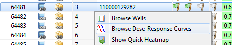
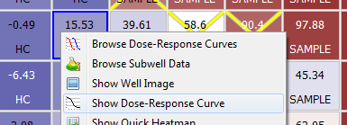
When using the first method, a new view will open listing all the compounds in the selected plate, along with the dose-response curves for all features that have a curve configured for them.
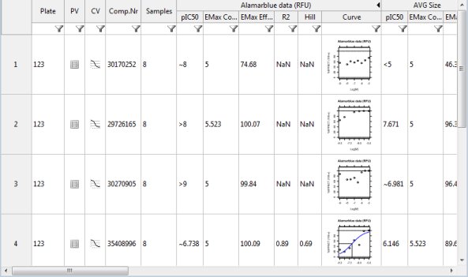
When using the second method, a smaller view will open to the right of the screen, showing a single dose-response curve in greater detail.
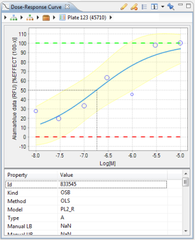
In the image above, the blue curve represents the fitted dose-response curve. The dotted black line indicates the pIC50 value, while the dotted red and green lines represent the lower and upper bounds respectively. The blue circles are the well samples that were used for fitting the curve.